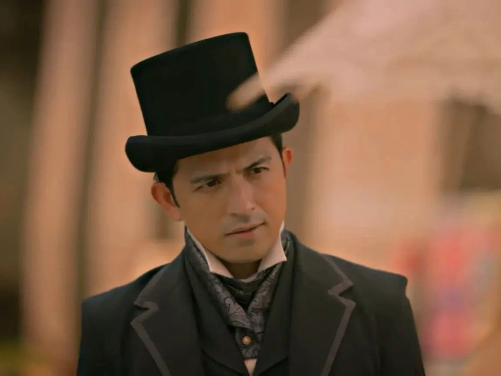
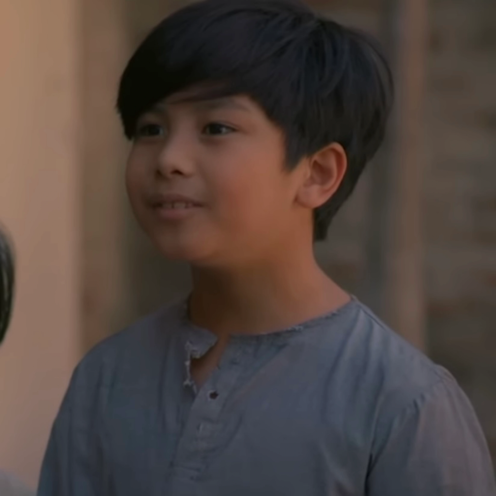

CHARACTERS IN NOLI ME TANGERE
|  | Juan Crisostomo Ibarra y Magsalin |
- Crisostomo Ibarra, whose full name is Juan Crisostomo Ibarra y Magsalin, is depicted as a wealthy young man of mixed Spanish and Filipino ancestry.
- He is the protagonist of the story and plays a significant role in highlighting the social issues and injustices prevalent during the Spanish colonial period in the Philippines.
|
 | Maria Clara de los Santos y Alba |
- She is the adopted daughter of Kapitan Tiago and is raised by the Spanish friar Padre Dámaso. Maria Clara is known for her grace, modesty, and loyalty to her family.
- She is one of the central characters in the story and is often regarded as the epitome of the ideal Filipina woman during the Spanish colonial period in the Philippines.
|
 | Padre Damaso Verdolagas |
- He is known for his harsh words, cruel behavior, and fierce temperament.
- Padre Damaso is portrayed as a symbol of the corrupt and oppressive Spanish clergy during the Spanish colonial period in the Philippines.
|
 | Kapitan Tiago |
- Kapitan Tiago is depicted as a wealthy and influential businessman in the town of San Diego. He is known for his generosity and lavish lifestyle.
- In the novel, Capitan Tiago plays a significant role in the social and political dynamics of the story. He represents the native-born Filipino elite who have gained wealth and influence through their connections with the Spanish colonial authorities.
|
 | Elias |
- Elias is portrayed as a strong and loyal man who becomes a key ally to the protagonist, Crisostomo Ibarra.
- He becomes involved in the fight against oppression and social injustices, aligning himself with the cause of the Filipino people.
|
 | Padre Salvi (Bernardo Salvi) |
- Padre Salvi is known for using his religious position for political influence and personal gain.
- In the novel, Padre Salvi becomes involved in various conflicts and intrigues.
|
 | Donya Consolacion |
- She is the wife of the alférez, the leader of the Guardia Civil in the town of San Diego.
- Donya Consolacion is portrayed as an older Filipina woman who is ashamed of her heritage and pretends not to speak Tagalog, her native language.
|
 | Don Rafael Ibarra |
- Don Rafael Ibarra is portrayed as the richest man and largest landowner in the town of San Diego.
- He is described as virtuous and generous, but his wealth and principles make him a target for the elite who conspire to destroy him.
|
 | Crispin |
- Crispin is depicted as a young boy living in the town of San Diego. He and his brother Basilio work as sacristans in the local church.
- Crispin's character symbolizes the injustice suffered by the Filipino Indios who were wrongly accused of crimes they did not commit.
|
|  | Basilio |
- He is the son of Sisa and the older brother of Crispin and he is depicted as a hardworking and caring son to Sisa and a loving brother to Crispin.
- Basilio and his brother endure difficult circumstances and poverty, but they strive to support their family.
|
Back to top
REFERENCES:
Crisostomo Ibarra
Maria Clara
Padre Damaso
Kapitan Tiago
Elias
Padre Salvi
Donya Consolacion
Don Rafael